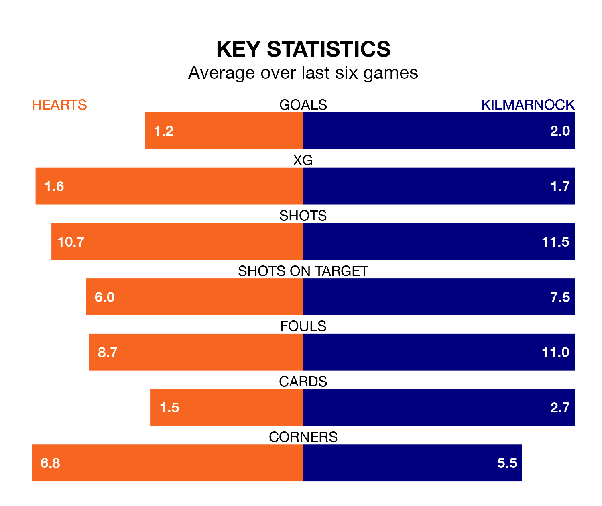

Hearts host Kilmarnock in Saturday's match at Tynecastle Park looking to bounce back from defeat last time out in the Premiership.
Hearts, who sit third in the league after 30 games, fell to a 2-1 away defeat to Ross County on March 16.
They face a Kilmarnock side who picked up a win in their last match, a 5-2 victory against St. Mirren, and who sit fourth in the table.
In Lawrence Shankland, Hearts have the league's sharpest shooter so far this season. He has notched 20 goals in 30 appearances.
Kilmarnock's top scorers, with seven goals in 28 games each, are Kyle Vassell and Marley Watkins.
In the last 10 years, Hearts and Kilmarnock have played each other on 25 occasions. Hearts won nine of them, Kilmarnock 10, and they drew six times.
On average, Hearts scored 1.2 goals and Killies 1.0 in those matches.
Their last meeting was on December 2, when Hearts won 1-0 away.
With 39 goals in 30 games so far this season, the hosts are scoring at the league's average rate with 1.3 goals per game. And they are conceding fewer than average, letting in 30 goals at a rate of 1.0 per game.
Killies are also average scorers, with 1.3 goals per game. They have conceded 1.1 goals per game.
Hearts are in mixed form in the Premiership, with three wins and a draw from their last six games.
With three wins and two draws over that period, the away side's form is slightly better – they have taken 11 points from 18, compared to Hearts's 10.
Updated: 12:39 (UTC), 26/03/24